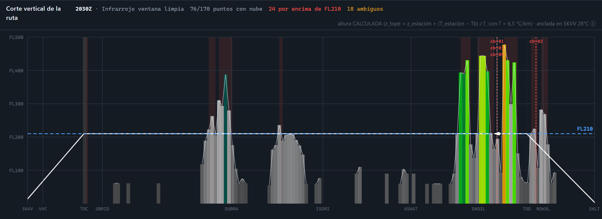
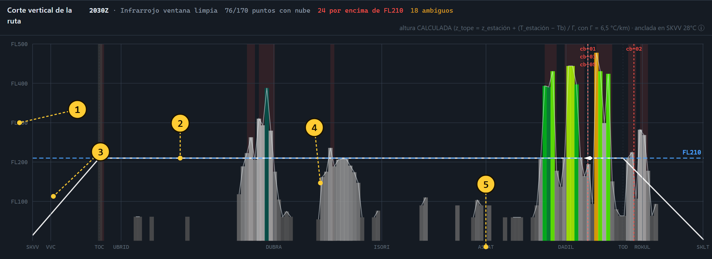
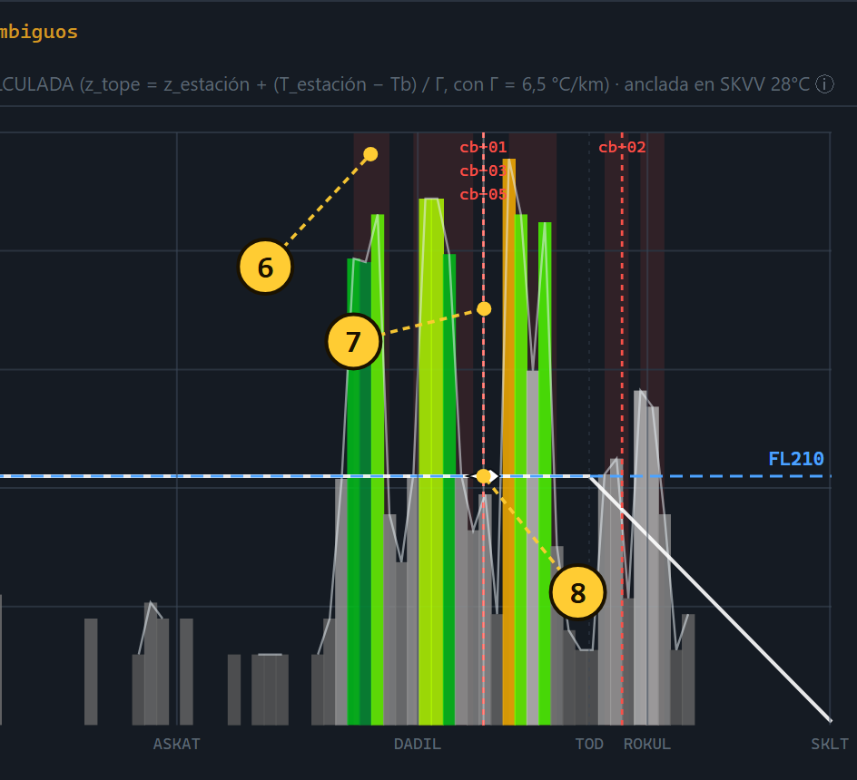
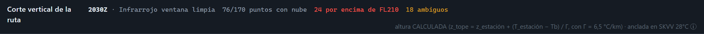
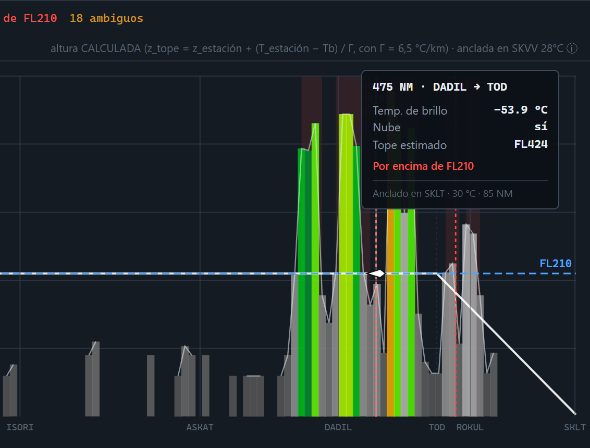
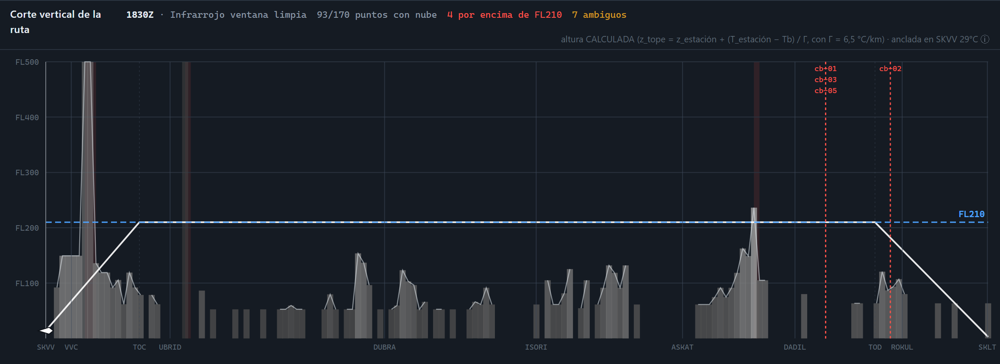

Si solo se retiene una cosa de esta guía, que sea esta.
El mapa enseña la tormenta vista desde arriba y no dice si se puede pasar por encima. El corte vertical la enseña de perfil, y ahí la respuesta se ve sola: donde la nube sube por encima de la línea azul del nivel de crucero, no se pasa.

Es una gráfica de distancia contra altitud. Se recorre de izquierda a derecha igual que se vuela: SKVV a la izquierda, SKLT a la derecha, y en medio los puntos publicados de la ruta.
Lo que se dibuja de gris y de colores no es terreno: son las nubes. Cada columna es un punto de la ruta donde el satélite detectó nube, y la altura de la columna es la altura estimada de su tope.
La línea azul de trazos es FL210, el nivel asignado al vuelo. Todo lo que asome por encima de esa línea es un problema; todo lo que quede por debajo, se sobrevuela.
Estos cinco están siempre, cambie la hora que cambie.

| Elemento | Qué es y cómo se lee | |
|---|---|---|
| 1 | Eje de niveles | Altitud en niveles de vuelo: FL100 son 10 000 ft, FL500 son 50 000 ft. La escala llega siempre hasta FL500 a propósito, aunque sobre sitio: si se ajustara al máximo de cada momento, la línea de crucero saltaría de sitio al mover el tiempo y no se podrían comparar dos horas. |
| 2 | Línea azul FL210 | El nivel de crucero asignado. Es la línea de decisión de toda la gráfica. |
| 3 | Senda blanca | El perfil vertical del vuelo: sube desde SKVV hasta el TOC, se mantiene en FL210, y baja desde el TOD hasta SKLT. Es la trayectoria prevista, no una medida. |
| 4 | Columnas | Las nubes. Una columna por cada punto muestreado de la ruta (son 170 en total). Su altura es el tope estimado; su color, la temperatura de brillo. |
| 5 | Puntos de la ruta | SKVV, VVC, TOC, UBRID, DUBRA, ISORI, ASKAT, DADIL, TOD, ROKUL y SKLT, en su distancia real. Sirven para decir dónde está el problema con un nombre que el evaluador reconoce. |
El color no es decorativo. Es la escala del propio satélite.
Cada columna se pinta con la misma tabla de color con la que el satélite publica la banda 13. Eso significa que el color de la gráfica y el color de la imagen satelital que se ve al lado significan exactamente lo mismo: no hay que traducir entre una y otra.
Esa tabla —se llama ircimss2— funciona así:
Gris — de +40 °C a −30 °C. Suelo, mar y nube baja o media. Columnas bajas.
Cian y azul — de −30 a −45 °C. Aquí empieza el color, y no es casualidad: es el corte a partir del cual la nube ya es alta.
Verde — hacia −50 °C. Convección desarrollada.
Amarillo — hacia −60 °C.
Naranja y rojo — de −65 a −75 °C. Tope en la alta troposfera: cumulonimbo maduro.
La regla práctica: mientras las columnas sean grises y bajas, la ruta está despejada al nivel de vuelo. En cuanto aparecen columnas verdes, amarillas o naranjas, hay convección profunda y hay que mirar la línea azul.
La altura de cada columna no la mide el satélite: se calcula a partir de la temperatura, con la fórmula que aparece escrita en la propia cabecera de la gráfica. El apartado 6 explica de dónde sale.
Por qué FL210 y no otro, y por qué no basta con subir.
FL210 no se eligió por comodidad. Todos los tramos de la ruta van entre 123° y 171° magnéticos, o sea dentro del semicírculo 000–179, donde la tabla de niveles de crucero obliga a niveles impares. FL200 —que es lo primero que uno escribiría para un ATR— corresponde al sentido contrario y no es asignable.
De los impares, FL190 queda descartado porque 19 000 ft es exactamente el techo de la zona restringida SKR7, que cubre el propio aeródromo de salida. Queda FL210.
La pregunta que suele hacer el evaluador: «¿y por qué no suben para pasar por encima?». La respuesta está en la gráfica: los topes llegan a FL424 y más. No hay nivel disponible para un ATR 72-600 que salve eso. Ante convección profunda la solución es lateral o temporal, nunca vertical.
Por eso la línea azul es el eje del análisis: separa lo que se sobrevuela de lo que hay que rodear.
Los tres elementos que solo aparecen cuando hay conflicto.

6Banda roja vertical. Marca los tramos donde el tope de nube supera el nivel de crucero. Es el resultado de comparar cada columna con la línea azul, hecho automáticamente. Si hay bandas rojas, ahí está el problema.
7Línea de trazos con etiqueta. Una célula
convectiva seguida por el análisis, con su identificador. Aquí se ven
cb-01, cb-03 y cb-05 apiladas: las tres
coinciden con la aeronave en la misma milla, por eso sus rótulos van
escalonados. cb-02 aparece más adelante.
8Rombo blanco. La aeronave, en la posición que le corresponde a la hora seleccionada. Se pone rojo cuando tiene nube por encima del nivel de crucero justo en su vertical.
Lo que esta figura demuestra: a las 2030Z el avión está en la milla 458, y justo ahí hay columnas verdes y naranjas que pasan de FL400 con tres células severas encima. Ese es el momento crítico del vuelo.
La franja de arriba es lo que hace defendible a la gráfica.

2030Z — la hora que marca la barra de tiempo. La gráfica entera corresponde a ese instante.
Infrarrojo ventana limpia — la banda 13 (10,3 µm), que es la que mide temperatura de tope y funciona de día y de noche.
76/170 puntos con nube — de los 170 puntos muestreados a lo largo de la ruta, en 76 se detectó nube. En el resto, cielo despejado.
24 por encima de FL210 — el número que resume el conflicto. En rojo porque es el dato operacional.
18 ambiguos — puntos donde el color del píxel no permite una lectura concluyente. No se rellenan con un valor plausible: se cuentan y se dicen.
La fórmula, que conviene saber explicar:
z_tope = z_estación + (T_estación − Tb) / Γ
Γ = 6,5 °C/km es el gradiente térmico de la troposfera de la Atmósfera Tipo OACI. T_estación y z_estación no son de atmósfera tipo: son de un METAR real, el de la estación más cercana a ese punto y a esa hora. Aquí, SKVV con 28 °C. Anclar en el dato observado es lo que separa esto de un número inventado.
Di siempre «altura CALCULADA». Está escrito en la propia gráfica. El satélite mide temperatura; la altura es una consecuencia del modelo, con su incertidumbre.
Pasar el ratón por la gráfica devuelve la ficha completa de ese punto.

Cada línea del globo responde a una pregunta distinta:
| 475 NM | Distancia desde SKVV, y el tramo en que cae: DADIL → TOD. |
| −53,9 °C | Temperatura de brillo medida en ese píxel. |
| Nube: sí | La máscara de nube lo confirma: está más de 10 °C por debajo del METAR de anclaje. |
| FL424 | Tope estimado. Calculado con la fórmula del apartado 6. |
| Por encima de FL210 | El veredicto de ese punto. |
| SKLT · 30 °C · 85 NM | La estación que ancló el cálculo y a qué distancia estaba. |
Úsalo en vivo durante la sustentación. Si alguien pregunta «¿y ahí cuánto hay?», pasas el cursor y sale el número con su procedencia. Eso demuestra que la gráfica no es un dibujo: es consultable punto a punto.
Lo que se vería si el análisis se hiciera solo en el momento de despegar.

93 de los 170 puntos tienen nube, así que la ruta no está despejada: hay nubosidad casi todo el trayecto. Pero eso no es lo que decide.
Lo que decide es que solo 4 puntos superan FL210, un 2 % de la ruta, y el tope máximo estimado llega a FL236: apenas 2 600 ft por encima del nivel de crucero, en un punto aislado.
Casi todas las columnas son grises y se quedan por debajo de la línea azul. Con esta imagen sobre la mesa, la ruta se declara practicable y el vuelo sale.
La misma ruta, el mismo nivel, el mismo procedimiento. Otro resultado.
Ahora hay menos puntos con nube —76 frente a 93— y sin embargo la situación es mucho peor: 24 puntos por encima de FL210, un 14 %, y un tope máximo de FL478. Aparecen las columnas verdes y naranjas, las bandas rojas y tres células severas.
No es que haya más nube: es que la nube que hay ha crecido. Es el ciclo diurno de la convección amazónica, y el vuelo la encuentra en su fase madura.
La frase que vale el trabajo entero: la fracción de ruta bloqueada al nivel de crucero se multiplica por siete entre la salida y la llegada, y el conflicto cae justo en el descenso a SKLT. Un análisis hecho solo con la imagen de la hora de salida habría declarado la ruta limpia y habría fallado exactamente donde importa.
Un guion de cinco frases, en orden, mientras se mueve la barra de tiempo.
Si te preguntan por qué no usaste el radar meteorológico: porque el del avión alcanza unas decenas de millas y solo ve lo que tiene delante. El satélite ve las 553 NM a la vez y con dos horas de antelación, que es lo que permite planificar el desvío en vez de improvisarlo.
Decir los límites antes de que los pregunten es lo que sostiene el resto.
1. El satélite mide el tope, no la nube. Bajo esa superficie no hay dato: ni base de nube, ni cizalladura, ni granizo en superficie. Por eso la columna se dibuja desde el tope hacia abajo sin afirmar dónde empieza la nube.
2. La altura es un cálculo, no una observación. Usa un gradiente térmico tipo (6,5 °C/km) que no se ha podido verificar para la Amazonía ese día, porque no hay radiosondeo. Es una estimación declarada.
3. La escala satura. La barra publicada no rotula por debajo de −90 °C. Un valor de −90 es un límite, no una medida. Por eso la severidad de las células se clasifica por el percentil 5 y no por el mínimo.
4. Hay puntos ambiguos y se dicen. A las 2030Z, 18 de los 170 puntos no dan lectura concluyente. La gráfica los cuenta en su cabecera en vez de rellenarlos con algo plausible.
5. Nube baja y niebla no se ven. Un estrato a 400 ft tiene casi la misma temperatura que el suelo tropical, así que la máscara no lo separa del terreno. Para techos bajos, el METAR es insustituible.
La conclusión que cierra la exposición: la teledetección cubre el hueco geográfico —los 553 NM entre aeródromos, donde no hay estaciones—, y la observación de superficie cubre el hueco vertical —lo que pasa por debajo del tope de nube—. Ninguna de las dos sobra.